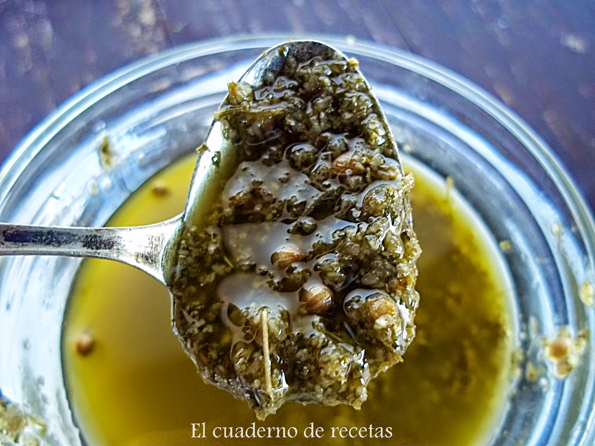

Mojo Verde

Descripción
La receta para hacer mojo verde es muy sencilla.
Con muy pocos ingredientes podrás lograr un mojo
idoneo para acompañar pescado, carnes, pan y, como no, papas arrugadas.
Ingredientes
- Aceite de oliva virgen/virgen etra
- Ajo
- Sal
- Cilantro
Preparación
- Machaca los ajos junto a una pizca de sal en el mortero
- Agrega el cilantro
- Mezcla junto al aceite